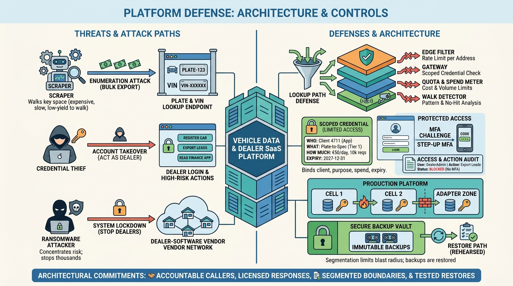

Part VII — OPERATIONS: Running the Platform
Protecting Dealers and Data: Security for a Vehicle Data Platform

Image generated by Google Gemini (gemini-3-pro-image-preview)
Part VII — OPERATIONS: Running the Platform

Image generated by Google Gemini (gemini-3-pro-image-preview)